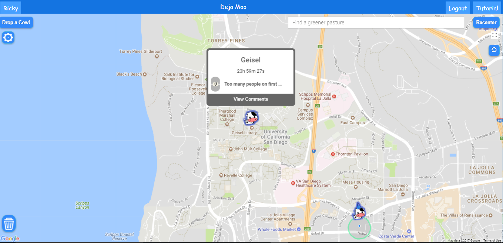

Ricky Lieu
Software Engineer & Game Enthusiast
Hi there! I’m a fourth year Cognitive Science major minoring in Computer Science at UCSD.
I'm a software developer living in San Diego and raised in the bay!
I am interested in the growing field of artificial intelligence and have recently gained an interest in web development . I hope to apply both my Cognitive Science and Computer Science backgrounds to create applications that are able to help others . I aspire to work on a future Super Smash Bros game installment and improve the bots to become more human-like.
When I'm not coding, I love to game with friends, volunteer at tutoring organizations, and explore different types of restaurants.
University of California, San Diego
Bachelor's in Cognitive Science - Computations
Minors in Computer Science and Business
Graduating June 2018
ServiceNow
Quality Engineering Intern
June 2017 - Present
As a quality engineering intern, I write automated tests (JUnit and Selenium) to apply to user stories and to replace old manual tests. I monitor hundreds of automated tests daily and help fix failures. I have become accustomed to working in a SCRUM environment through participating in sprint planning and bug bashes.
Collaboratory for Neuroimaging Research and Development (CNIRD)
Psychiatry Research Software Developer
June 2016 - June 2017
The combination of Cognitive Science and Computer Science! I used the C++ Insight Segmentation and Registration Toolkit (ITK) to improve brain image segmentation accuracy as well as to extract the cerebellum from a scan, both of which helped simplify quality control analyses of brain scans. I created a Django web application with a MySQL database to simplify their 30+ column spreadsheets into a series of web pages.